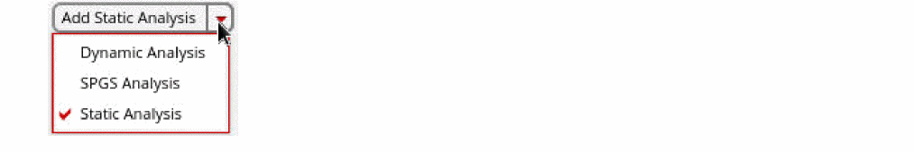
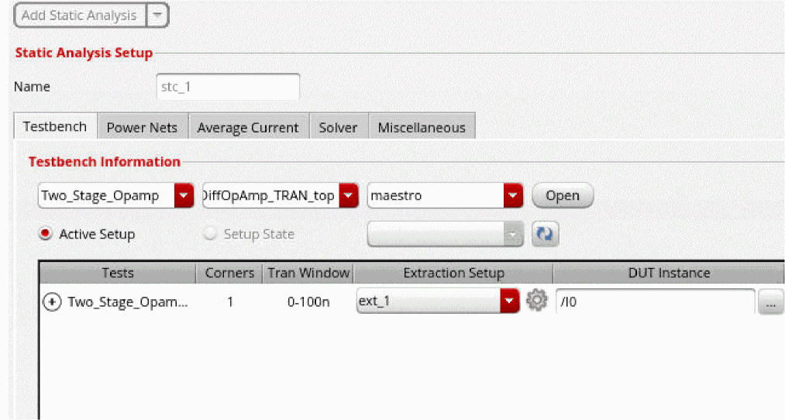
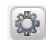
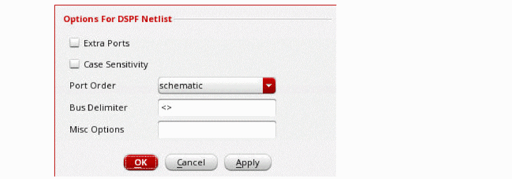
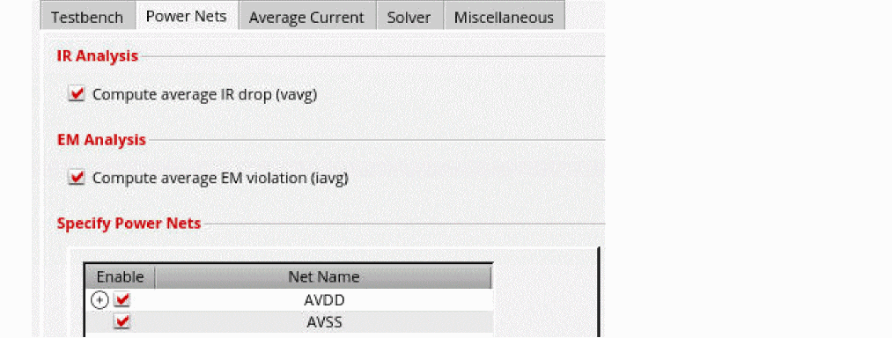
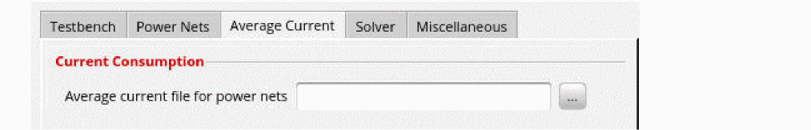
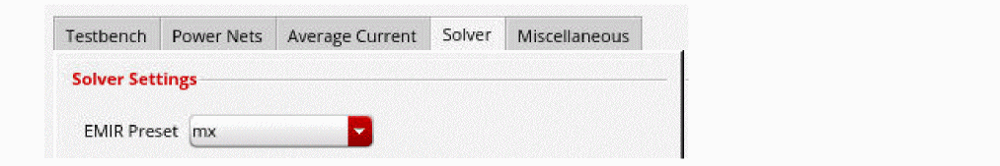
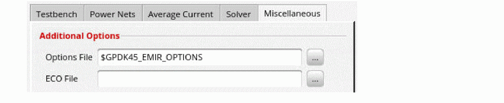

Performing Static Analysis
- Choose Setup – Analyses from the task pane.
-
Select Static Analysis from the drop-down list, and click Add Static Analysis.
 -
In the Name field, specify a name for the analysis setup.
 -
On the Testbench tab, import the testbench setup information from Virtuoso® ADE Explorer or Virtuoso® ADE Assembler.
To import the simulation setup from ADE:- In the Testbench Information section, specify the maestro cellview from which to import a testbench setup.
- You can view the testbench setup in ADE by clicking Open next to the maestro cellview.
-
Click Active Setup or Setup State to select the testbench setup to use.
-
Click the + sign next to a test to view all the simulation corners defined for the test. You can map each simulation corner to a different extraction setup.
The DUT instance field will be automatically populated. If the DUT Instance name is not given, you can interactively select an instance from the schematic by clicking the browse button. -
You can click the Advanced Settings (
) icon in the Extraction Setup column to specify the following additional options for handling DSPF netlist.
- Extra Ports - If the port number in DSPF does not match the port number in the schematic netlist instance call, this option can be used to automatically handle extra ports. When selected, the extra ports in the DSPF subcircuit call are changed to internal nodes. In addition, the extra ports in the schematic subcircuit definition are connected to the nodes with the same name in the DSPF netlist.
- Case Sensitivity - Select this option to make the DSPF file case-sensitive.
- Port Order - Specifies whether the port order is taken from the schematic subcircuit definition or from the DSPF subcircuit definition.
- Bus Delimiter - Defines the bus delimiter in the DSPF netlist.
- Misc Options - Specifies additional options for the DSPF netlist.
-
On the Power Nets tab, select the IR/EM analysis options and nets that you want to include in the analysis.
 -
On the Average Current tab, browse and select the average current file for the specified power nets.
You can generate the current file from the dynamic analysis run. To generate the average current file, you need to include the option file in the Miscellaneous tab for Dynamic Analysis Setup in the Setup - Analyses tab. The options file should include the following command:
time window=[start_time stop_time] output=power filename=file_name.txt
Following is an example of the static-current file:
avdd 10m
avss -10m -
On the Solver tab, select an EM-IR preset option.
 -
On the Miscellaneous tab, specify the additional options for the EM-IR run and the ECO file for what-if analysis.
 -
Click OK.
The analysis details will be displayed in the Analyses tab. You can click Add Static Setup again to add multiple analyses.
Related Topics
- Voltus-XFi EM-IR GUI – Setup Tab
- Viewing EM-IR Analysis Results
- Performing Dynamic Analysis
- Performing Static Power Grid Solver Analysis
- EMIR
Return to top